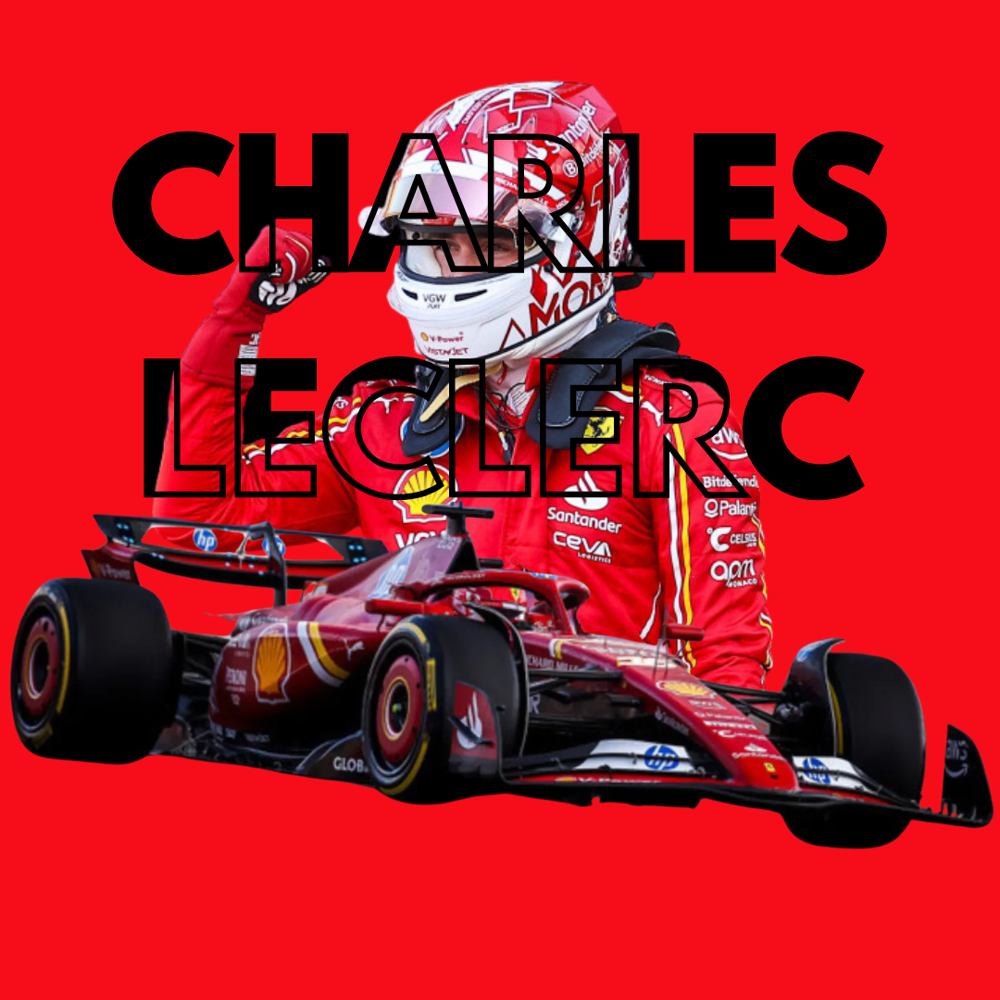
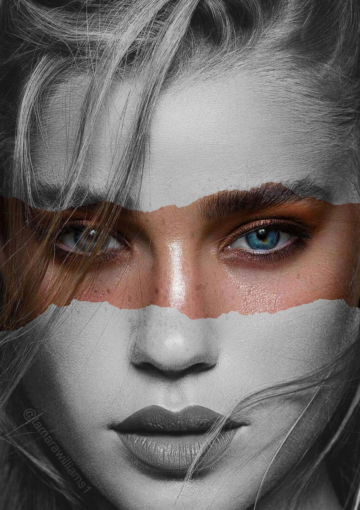

Chef de projet digital
Afpa — Montreuil
Gestion de campagnes Meta, Google et LinkedIn ; analyse des KPI ; création de contenus publicitaires et campagnes emailing / SMS.
Passionnée par le marketing, la communication et le commerce, j'aime mettre ma créativité et ma polyvalence au service de projets variés. Mes quatre années d'expérience en alternance m'ont permis de développer des compétences complémentaires, tout en renforçant mon sens de l'organisation, mon esprit d'analyse et ma capacité à m'adapter.
Curieuse, dynamique et toujours prête à apprendre, j'aime découvrir de nouveaux horizons et relever de nouveaux défis.
Aujourd'hui, je suis à la recherche d'un CDI en marketing, communication ou commerce, à Paris, Poissy et ses alentours.
Afpa — Montreuil
Gestion de campagnes Meta, Google et LinkedIn ; analyse des KPI ; création de contenus publicitaires et campagnes emailing / SMS.
Paris Ouest Clôtures — Chérisy
Stratégie de communication, création de contenus, référencement naturel et analyse des performances.
Paris Ouest Clôtures — Chérisy
Relation clients et fournisseurs, commandes, facturation, accueil et offres commerciales.
ISCOD — Paris
ESUP Paris — La Défense
SUP de V — Aubergenville
Google Ads, Meta Business Suite, LinkedIn Campaign Manager, TikTok Ads Manager, TikTok Business Center.
Création de contenus, campagnes emailing / SMS, référencement naturel et Canva.
Pilotage de campagnes, suivi des KPI, analyse des performances, coordination et organisation des projets.
Salesforce, Marketing Cloud, P8, EBP, gestion de la relation client, suivi commercial et administratif.


J'adore partir à la découverte de nouveaux endroits, m'imprégner d'autres cultures et de créer des souvenirs qui restent.
La musique fait partie de mon quotidien et rien ne vaut l'énergie d'un concert, chanter à tue-tête et partager des moments uniques.
Depuis toujours, j'aime l'univers automobile : le bruit des moteurs, l'adrénaline des courses et l'ambiance des circuits me font vibrer.
Une opportunité, un projet ou simplement envie d’échanger ?
E-mail : anaelle.batista.pro@gmail.com · Tél. : 06 27 56 20 23